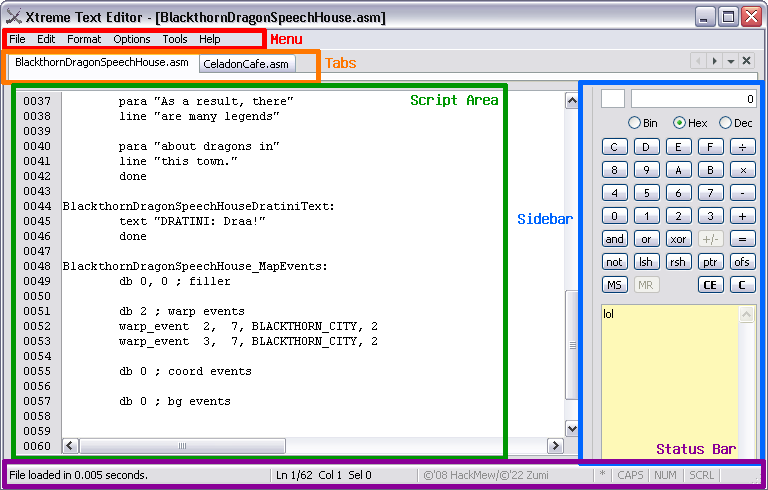
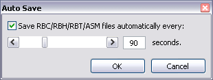
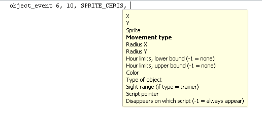
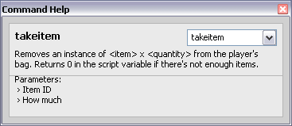
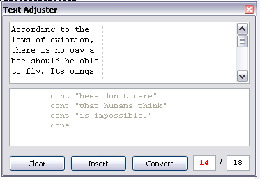

XTE - Xtreme Text Editor
XTE - Xtreme Text Editor
Literally Notepad with extras
XTE
Isn't it funny, a whole manual tucked inside a chapter of the program's
own help. Alright, let's take a look...
Interface Operations

Menu
The following menus are available:
- File - Basic file operations. Create a new tab for a new file,
open, save, close file, look at recent files, you get the picture.
You can also print text files if you want.
-
Edit - Editing operations, undo/redo, cut/copy/paste... but there's
also some other functions such as:
- Backup - Backs up the current file. Ctrl+K is
the hotkey for this. If your file is [FILENAME].asm, your
backup will be [FILENAME].bak.
- Read Only - Disables or enables editing inside the
current tab.
- Revert - Reverts any changes made to the current file
since the last save. In other words, it basically reloads
the current file.
- Insert Date/Time - Inserts the current date and time
at cursor position, according to your computer's locale.
-
Format - Edits the appearance of the script area. You may change
the colors and fonts here.
-
Options - You can adjust how the program works here.
- Always on Top - Sets the program to always be displayed
on top of other windows.
- Minimize to System Tray - In case you don't want to
clutter up your task bar. (A little buggy for now)
- Remember Window Size - If you want to have the program
be opened at the same size as when you closed it.
- Auto Save - Opens this dialog box that lets you adjust
how often should files be auto-saved.

- Show Recent Files - Affects the File menu.
- Line Numbers - Toggles displaying line numbers in the
script view.
- Inline Command Help - When you're typing a script, this
option tries to assist you in setting parameters for a command
or directive, like so:

- Associate - This enables XTE to be associated with a few file formats.
-
Tools - Additional tools to assist in script writing.
- Script Templates - (I haven't touched this yet, so
ignore it for now. It's supposed to have templates you
can use as a base)
- Text Adjuster - Will be explained later in the
document.
-
Help - Help files, command reference and XTE version info.
Script Area
The script area is, of course, where you'll do most of your work.
Line numbers are enabled by default to orient yourself more easily in
long scripts.
Status Bar
Displays various information about the current script. It can be divided
into the following panels:
- File Status - When first loaded or idle, it will show
tips. When a file is loaded, it will display how much time it took
to show the file.
- File Info - Shows where exactly in the file is the cursor placed
- and if there is anything selected, it will show how many characters
there are in the selection
- Software Attribution - Shows the author and year of the program.
- Dirty Indicator - This indicator will turn black if the file
is edited but has not been saved
- Caps Lock - Turns black when Caps Lock is enabled. You can
also toggle it by double clicking on it, which affects the actual
keyboard's status.
- Num Lock - Same as before, but with the Num Lock toggle instead.
- Scroll Lock - Same as before, but with the Scroll Lock toggle.
Calculator
A part of the side bar, the calculator pretty much does what you expect.
Saves good time diving for calc.exe (or, if it's open, trying
to find it in the taskbar). It allows for easy conversion between binary,
hexadecimal and decimal numbers, as well as perform your basic calculations.
The numbers displayed are not prefixed, as its base is indicated by the
current mode selection.
(At the moment, most operations won't work in binary mode)
Explanation of the extra buttons:
- and - Performs a bitwise AND with another number.
- xor - Performs a bitwise exclusive OR (XOR, EXOR, EOR) with
another number.
- or - Performs a bitwise OR with another number.
- not - Performs a logical NOT. Compared to the +/-
operation (which does a 2's complement), this simply does a 1's complement.
- lsh - Performs a bitwise left shift by positions indicated by another number.
- rsh - Performs a bitwise right shift by positions indicated by another number.
- ptr - Converts a hexadecimal number (as ROM address) into a
Game Boy Advance pointer.
- ofs - Converts a hexadecimal number (as a Game Boy Advance pointer)
into a ROM address.
- MS - Saves the currently displayed number into calculator memory (1 number only!).
- MR - Recalls the saved number from memory.
- MC - Clears the calculator memory.
Notes
In more mainstream programmer's text editors, notes can usually be displayed
side-by-side with the main file. This, however, adds a bit of work (need to
find or create a notes file, need to adjust the editor for comfortable
editing, etc.). This program offers a built-in sticky as part of the sidebar
for things like making a note of constants or details of scripts.
The notes typed in this area is automatically saved at Notes.txt of the
app's folder, and can be opened using any text editor.
Command Help

As the name might suggest, it provides an overview of various scripting commands.
The command help may be explored freely to see what's possible, or can be called
through the script area. When called through the script area, it is context-aware.
This means, if your cursor is located at a line which contains sjump, it will open the
details for the sjump command.
Text Adjuster

This feature remains useful, and even more so when applied to GBC hacking,
as unlike the GBA games which use variable width text, GBC scripts use
fixed width text.
Using this tool, there's no need to futz around with making comments that
mark the maximum number of characters supported. Just type in your text,
press Convert, and then Insert it into the text. You can
also still set a custom character limit. Either way, the textbox on the
left of the character limit will show how close you are to breaching
the character limit. (green to red)
To create a new paragraph, create one blank line between the current
paragraph and the next (press Enter twice).
Hotkey Reference
These were copied directly from XSE; I will have to adjust these later.
-
Ctrl+A: select all the text
-
Ctrl+B: open the Batch Compiler
-
Ctrl+C: copy selected text
-
Ctrl+D: open the Decompile Options
-
Ctrl+F: open up the Find & Replace
-
Ctrl+G: goes to a specific line in the script
-
Ctrl+H: open Hex Viewer
-
Ctrl+K: backup the loaded script/ROM
-
Ctrl+L: hide/show line numbers
-
Ctrl+M: hide/show menu
-
Ctrl+N: open a new tab
-
Ctrl+O: open a file or a ROM
-
Ctrl+P: print current script
-
Ctrl+Q: exit XSE
-
Ctrl+R: open ROM Resizer
-
Ctrl+S: save current script
-
Ctrl+T: run the Text Adjuster
-
Ctrl+U: run live update
-
Ctrl+V: paste text
-
Ctrl+W: close current tab
-
Ctrl+X: cut selected text
-
Ctrl+Y: redo last change made to the script
-
Ctrl+Z: undo last change made to the script
-
Ctrl++: zoom the font in
-
Ctrl+-: zoom the font out
-
Del: delete selected text
-
F1: show command help
-
F2: open this guide
-
F5: revert/load last saved version of the actual script
-
Shift+Ctrl+A: load the text, if any, on the current line into the Text Adjuster
-
Shift+Ctrl+B: browse folder to load a script file or a ROM
-
Shift+Ctrl+C: compile the current script
-
Shift+Ctrl+D: decompile the script located at the offset specified
-
Shift+Ctrl+F: open the folder where the current script/ROM is
-
Shift+Ctrl+G: debug the current script
-
Shift+Ctrl+H: open the Hex Viewer using the offset found on the text selection, if any
-
Shift+Ctrl+L: show last log, if any
-
Shift+Ctrl+O: set the focus to the offset textbox in the toolbar
-
Shift+Ctrl+S: save the current script
-
Shift+Ctrl+X: insert the string "#org 0x" in the current script